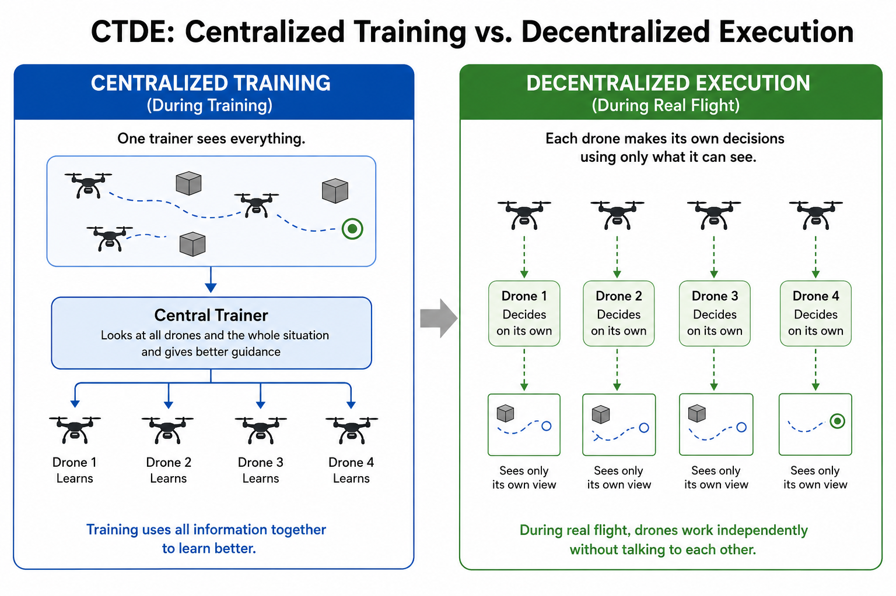
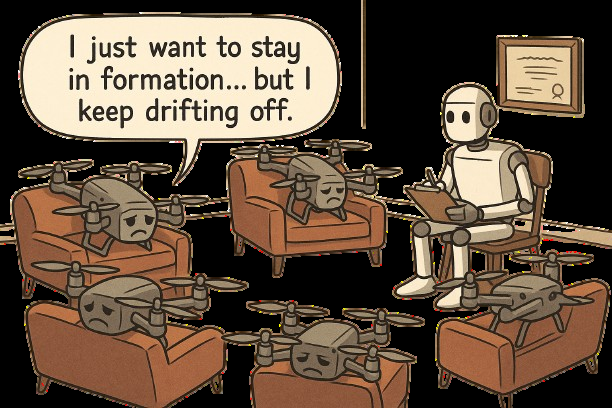

What Actually Happens During MARL Training?
Inside the Instability of Multi-Agent Learning

For many people, Multi-Agent Reinforcement Learning (MARL) is first encountered through impressive demonstrations: drone swarms flying in formation, warehouse robots moving together, autonomous vehicles negotiating intersections, or simulated agents cooperating inside complex environments.
From the outside, these systems can look almost natural. The agents appear coordinated, as if they somehow understand teamwork. But that is not what the training process feels like.
Behind every stable formation is usually a long period of unstable learning, failed rollouts, reward redesign, collapsed policies, strange behaviours, and repeated debugging. A swarm that looks smooth in a final video may have spent most of its training life doing the opposite: drifting apart, colliding, freezing, oscillating, or learning behaviours that technically improve reward but make no real engineering sense.
That is what makes MARL difficult. It is not simply reinforcement learning with more agents. It is a learning problem in which every agent adapts while the others do as well, meaning the environment is no longer fixed. The target keeps moving.
In single-agent reinforcement learning, one agent learns by interacting with an environment that is assumed to remain relatively consistent. The agent explores actions, receives rewards, and gradually improves its behaviour.
In MARL, that assumption breaks very quickly. Every agent is updating its policy. Every update changes the behaviour seen by the other agents. So the system is not only learning inside an environment; it is also changing the environment through learning. This is where MARL becomes an engineering problem, not just an algorithmic one.
The central question is no longer only: how do we maximise reward? It becomes: how do we stabilise learning when every learner keeps changing the conditions for the others?
The Problem of a Moving Environment
The first major challenge in MARL is non-stationarity. In single-agent RL, the agent can gradually learn because the relationship between states, actions, and outcomes is stable enough to approximate. The environment may be complex, but it is not usually learning against or alongside the agent.
In MARL, the environment becomes a moving target. In UAV formation control, imagine one drone discovers a slightly better way to move toward the target. That small improvement changes spacing, velocity relationships, and the relative observations of the other drones. Now the neighbouring agents are no longer responding to the same situation they saw before. Their learning problem has changed too. Then they adapt. Their adaptation changes the environment again. This feedback loop continues throughout training.
In my own UAV formation experiments, this was one of the first things that became obvious. A formation could look stable for several episodes, then suddenly collapse without any obvious change in the code. One or two agents would adopt a slightly different movement pattern, and the rest of the group would fail to adjust quickly enough. The strange part is that the individual agents were not always wrong. Sometimes each agent followed a behaviour that made sense locally, but together the swarm became unstable.
Individual improvement does not automatically produce collective stability.
A drone can improve its approach to the goal while still worsening the formation. Another drone can become better at avoiding collisions and still make the group too conservative. One agent can stabilise itself while destabilising the whole system.
This is why MARL training often does not improve smoothly. Sometimes reward improves while formation error gets worse. Sometimes collisions are reduced, but the agents become too cautious. Sometimes the swarm suddenly looks coordinated, only to collapse again a few training runs later. This is not always a sign that the implementation is broken. In many cases, it is the nature of the learning problem itself.
Centralised Training and Decentralised Execution

One of the most important ideas used to manage this instability is Centralised Training and Decentralised Execution, usually called CTDE.
The idea is simple but powerful: during training, the system is allowed to use more information than each individual agent will have during deployment. During execution, each agent must act using only its own local observations.
This distinction matters a lot for robotics. A real UAV cannot always depend on perfect global information. It may only observe nearby agents, its own position estimate, velocity, distance to a target, obstacle information, or limited communication from neighbours. In real systems, there are delays, sensor noise, localisation errors, and communication limits. A policy that only works because every drone has perfect global knowledge may look good in simulation but fail in deployment.
CTDE tries to solve part of this problem. The actor remains decentralised, meaning each agent learns which action to take based on its local observations. The critic is centralised during training, allowing it to observe the broader system state and help evaluate whether an action was useful to the team as a whole.
The actor asks: what should this drone do next based on what it can see? The critic asks: did this action help the whole swarm?
In my project, this distinction became more than a theoretical concept. For UAV formation control, local observations are necessary because the final system should be compatible with real drone deployment. But training only on local signals can be unstable, since one drone may not understand how its movement affects the entire formation.
Each agent policy uses its own observation, while the value function can evaluate the broader system during training.
This is one reason algorithms like MAPPO are widely used in cooperative MARL. They provide a practical way to train decentralised agents with centralised guidance.
But CTDE does not magically solve MARL. It helps stabilise learning, but the hard problems remain: reward design, credit assignment, exploration, coordination collapse, and the gap between simulation and real hardware.
The Credit Assignment Problem
Even when the system receives a reward, one difficult question remains: who actually deserves credit? Suppose a group of UAVs reaches the target while maintaining formation and avoiding collision. The system receives a good reward. But what caused the success? Was it the lead drone choosing a stable path, the rear drone correcting spacing, one side drone preventing the shape from drifting, or the whole group adapting together? The answer is not always obvious.
This becomes even harder when the system fails. If the formation collapses, which agent caused it? Was one drone too aggressive? Was another one too slow? Was the reward badly shaped? Was the policy update too large? Was the environment too difficult too early?
In my own training runs, the reward curve alone was not enough to explain what was happening. Sometimes the total reward looked like it was improving, but when I watched the playback, the behaviour was clearly not good. The drones might move toward the target but lose formation, or they might stay close together but refuse to move properly.
This is where I learned that MARL evaluation cannot depend only on reward. For formation control, I had to think in terms of separate metrics: distance to target, formation error, inter-agent spacing, collision count, success rate, smoothness of movement, and whether the final behaviour actually makes sense visually.
Reward is useful, but reward can also lie.
A reward function may say the agent is improving while the actual behaviour is not deployable. That is why reward design is one of the most important parts of MARL engineering. A typical formation-control reward may look like this:
In formation control, the system has to balance several objectives at the same time: reaching the goal, maintaining formation, avoiding collisions, minimising unnecessary movement, producing smooth trajectories, and staying stable.
The problem is that these objectives often fight each other. If the goal reward is too strong, the drones may rush toward the target and destroy the formation. If the formation reward is too strong, they may stay together but move poorly. If the collision penalty is too strong, they may become too cautious or freeze. If the energy penalty is too high, they may avoid moving rather than solving the task.
In my case, the collision and formation terms caused the most headaches. Collision penalties were necessary because unsafe behaviour could not be tolerated, but making them too aggressive created another problem: the drones became afraid to move.
Formation rewards also looked simple on paper, but tuning them was difficult because a tight formation can easily become too rigid. The system needed enough pressure to preserve shape, but not so much that the agents lost the ability to adapt.
This is why MARL is not only about choosing the right algorithm. A lot of the real work is in shaping the learning environment so that the right behaviour becomes easier to discover. The algorithm matters, but the reward structure, curriculum, environment design, and evaluation metrics matter just as much.
When Learning Starts to Look Like Coordination
One of the most interesting parts of MARL is that coordination can emerge without being manually programmed.
The agents are not explicitly told every detail of how to cooperate. They are not given a fixed script that says which agent should move where, when it should slow down, or exactly how it should adjust when another agent drifts. Instead, the system learns through repeated interaction.
At the beginning, the behaviour is usually messy. The drones move randomly, drift apart, collide, overshoot, fail to maintain spacing, or produce the strange behaviour where one agent appears active while the others do almost nothing.
Then, after enough training and enough reward correction, small patterns begin to appear. The agents start moving less randomly. Spacing becomes more consistent. Collisions reduce. The group begins to respond more predictably. Eventually, something that appears to be coordination starts to emerge.
But this also comes with a warning: emergent behaviour is not automatically good behaviour.
Agents can discover bad shortcuts. They can exploit reward loopholes, learn unstable coordination, or produce behaviours that look successful numerically but are not safe or useful in the real world.
This is why watching the playback matters. Logs are not enough. Reward curves are not enough. You have to observe what the agents are actually doing.
In my case, many important problems only became obvious when I watched the UAVs move. The numbers could suggest progress, but the visual behaviour revealed whether the swarm was genuinely learning coordination or only exploiting the reward function.

Simulation, Reality, and Practical Limits
Simulation makes MARL possible, but simulation is not reality. A policy can perform well in PyBullet, Gazebo, or another simulator and still fail when moved closer to real hardware. This is the Sim2Real gap.
For UAVs, the gap is especially serious because flight systems are sensitive. Small errors can become large problems quickly. Real drones deal with sensor noise, actuator limits, communication delays, localisation errors, battery differences, airflow disturbances, and imperfect control loops.
A policy that looks smooth in simulation may behave differently when deployed on real Crazyflies or tested through a more realistic robotics stack. This is why MARL for UAVs cannot be treated as a pure machine learning problem. The learning algorithm is only one layer. Below it, there is control, localisation, hardware timing, safety, communication, and system integration.
This is one of the reasons my project direction has to be careful. The aim is not only to show a nice swarm video. The deeper question is whether a MARL-based formation-control policy can be trained to respect the constraints of real UAV deployment.
That means local observations matter. Formation metrics matter. Obstacle avoidance matters. Control stability matters. Sim2Real evaluation matters. Most importantly, the final behaviour has to be something that could realistically move toward hardware validation.
What Training Actually Feels Like
The clear explanation of MARL is this: multiple agents learn policies through interaction and optimise a shared or individual reward function. But the practical experience is different.
Training feels more like a cycle. You define the environment, design the observation space, choose the action space, write the reward function, and start training. Then the agents fail in a way you did not expect. You inspect the logs, watch the playback, and realise that the reward is encouraging the wrong behaviour.
You adjust the reward, train again, see a small improvement, then watch the system collapse in another way. Then you add curriculum. You tune hyperparameters. You reduce one instability and expose another. You test again, and you find a new problem. That is the real process.
It is slow, iterative, and sometimes frustrating, but it is also where the actual understanding comes from. Reading about MARL gives the theory, while training a system exposes the weaknesses, assumptions, and hidden engineering problems behind that theory. You start to understand why non-stationarity matters because you see the formation collapse. You understand credit assignment because you cannot tell which drone caused the failure. You understand reward shaping because the agents exploit your reward in ways you did not expect. You understand Sim2Real concerns because even a successful simulation policy may not be physically meaningful.
This is why I think MARL training should be discussed more honestly. The final result may look intelligent, but the process is full of instability.
What I Have Learned
What actually happens during MARL training is not just the optimisation of individual agents. It is the attempt to stabilise a system where multiple learners are changing at the same time. That is the core difficulty.
The environment moves. The agents adapt. The reward signal becomes ambiguous. Old data becomes stale. Coordination appears, disappears, and sometimes reappears.
A swarm may look stable for several episodes and then collapse because the collective behaviour shifted. A policy may improve locally while making the group worse. A reward function may produce high scores but poor movement. A simulation may look successful while still being far from deployable. This is the reality behind MARL training. It is not clean. It is not smooth. It is not just algorithm selection.
It is reward design, curriculum planning, systems debugging, observation design, metric tracking, playback analysis, and constant engineering judgement.
But that is also what makes it interesting. When coordination finally begins to emerge, it is not just because one agent learned well. It is because the system found a way to stabilise collective behaviour under uncertainty.
Underneath every successful swarm demonstration is a much less visible story: failed runs, unstable gradients, collapsed formations, redesigned rewards, strange behaviours, and many experiments that did not work.
That instability is not a side effect of MARL. It is the environment in which collective intelligence is learned.
Comments